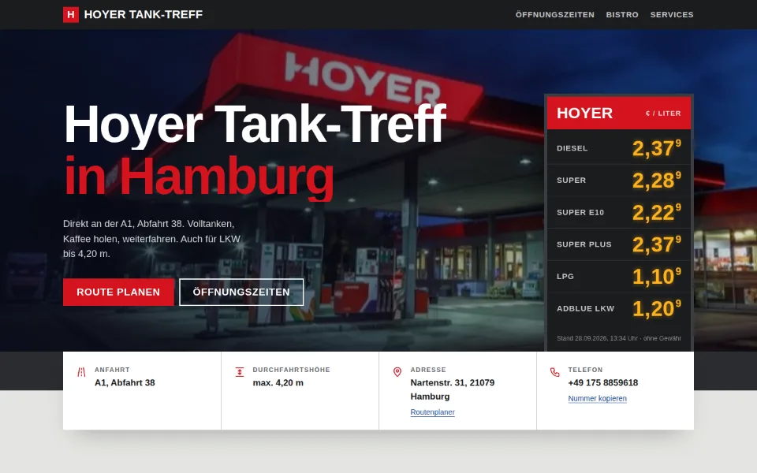
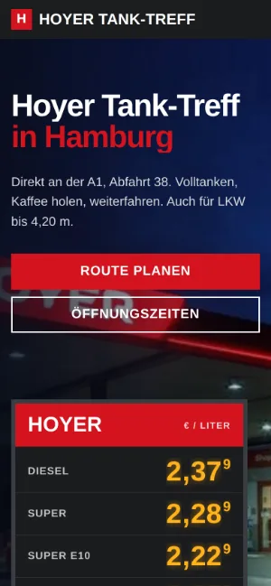

Case Study 03 / 30 · Mobilität
Hoyer Tank-Treff Hamburg
Tankstellen-Seite wie ein Straßenraum: Preismast, 24-Stunden-Zeitleiste, Route und Telefon sofort da.


Entwurf ohne Auftrag. Hoyer Tank-Treff Hamburg ist kein Kunde; Name und Marke gehören dem Betrieb. Impressum und Datenschutz verlinken auf hoyer.de, ein Cookie-Banner ist laut Notiz im Ordner vorgemerkt, aber noch nicht eingebaut.
Ausgangslage
Der Hoyer Tank-Treff liegt an der Nartenstraße 31 in Hamburg-Harburg, direkt an der A1, Abfahrt 38, mit Bistro, Shop und Durchfahrtshöhe bis 4,20 m für LKW. Wer hierher kommt, will drei Dinge schnell wissen: Was kostet der Sprit, ist gerade offen, wie komme ich hin. Der Entwurf stellt genau diese Angaben in den Vordergrund und ordnet alles Weitere darunter ein.
Idee
Die Seite denkt in Verkehrszeichen: Beton- und Asphaltgrau als Fläche, Signalrot und Autobahnblau als Akzente, dazu gelb leuchtende LED-Ziffern am Preismast. Barlow Condensed in Versalien wirkt wie Beschilderung, die Öffnungszeiten laufen als Balken auf einer 24-Stunden-Skala. So fühlt sich die Seite an wie der Ort selbst, ohne ein einziges Stockfoto zu brauchen.
Was die Seite kann
- PreismastSechs Kraftstoffe mit Ziffern in einzelnen LED-Zellen, die beim Laden nacheinander aufleuchten, inklusive Stand-Datum und Hinweis „ohne Gewähr“.
- 24-Stunden-ZeitleisteJeder Wochentag als Balken auf einer Skala von 0 bis 24 Uhr, der heutige Tag hervorgehoben und mit einer Marke für die aktuelle Uhrzeit.
- InfobandAnfahrt, Durchfahrtshöhe, Adresse und Telefon als Fakten direkt unter dem Hero, mit Link zum Routenplaner.
- Nummer kopierenEin Knopf legt die Telefonnummer in die Zwischenablage und bestätigt das kurz im Button.
- SeitensucheDas Suchfeld im Fuß durchsucht Überschriften und Listen der Seite und scrollt zum ersten Treffer, ohne Server.
- Bistro und ServicesAngebot für unterwegs, WC, LKW-Spur und die akzeptierten Tank- und Kreditkarten in einer Übersicht.
Dein Betrieb
So eine Seite für dich?
Schreib mir kurz, was du anbietest und was deine Website leisten soll. Du bekommst eine ehrliche Einschätzung, was sie kostet und was sie dir bringen kann.
Projekt anfragen